“Đạo đức cách mạng … tận trung với nước, tận hiếu với dân.”
Bác thăm hỏi nhân dân xã Tân Phong, Vĩnh Phúc (1956)
13ảnh tư liệu
3phim tư liệu
8trích dẫn
9tấm gương
10câu trắc nghiệm
Tổng quan thành tố
Là gốc, là nền tảng
Tạo sức mạnh, quyết định thành công
Ai giữ được đạo đức đều là người cao thượng
Phẩm chất quan trọng nhất
Đặt lợi ích Tổ quốc, Nhân dân lên trên hết
“Tận trung với nước, tận hiếu với dân”
Bốn đức của người cách mạng
Cần đi đôi với kiệm; liêm, chính là gốc
Chí công vô tư: vì cái chung, không vụ lợi
Đạo đức Hồ Chí MinhCái gốc của người cách mạng
Yêu thương người nghèo khổ, bị áp bức
Sống có tình nghĩa, khoan dung
Giúp đỡ nhau cùng tiến bộ
Tôn trọng, hiểu biết, đoàn kết các dân tộc
Vì hòa bình, độc lập, dân chủ, tiến bộ
Chống chia rẽ, hận thù dân tộc
Nói đi đôi với làm, nêu gương
Xây đi đôi với chống
Tu dưỡng suốt đời: “ngọc càng mài càng sáng”
Ảnh tư liệu
1
Trung với nước, hiếu với dân
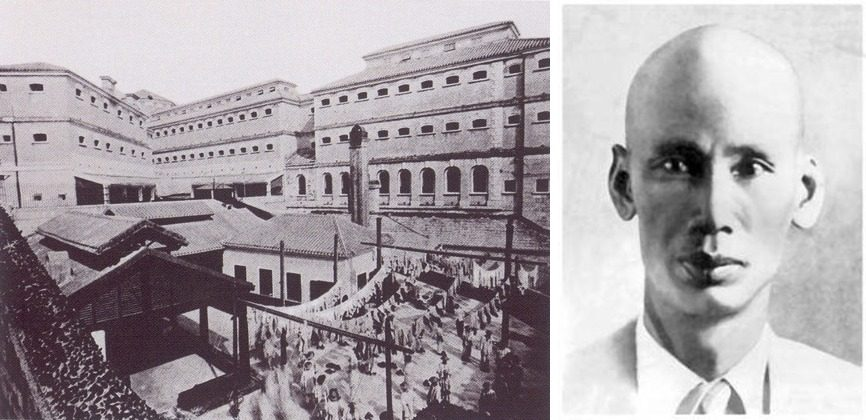
Bị giam giữ tại nhà ngục Victoria, Hồng Kông (1931 – 1933)Bị chính quyền Anh bắt giam, Nguyễn Ái Quốc vẫn giữ vững khí tiết, kiên định con đường cách mạng. Bên trái: nhà ngục Victoria; bên phải: chân dung Nguyễn Ái Quốc thời kỳ ở Hồng Kông.
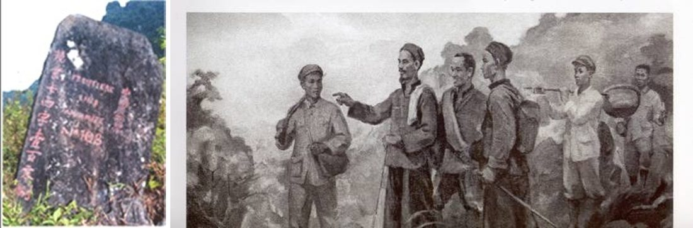
Trở về Tổ quốc sau 30 năm (28/1/1941)Nguyễn Ái Quốc đặt chân tại biên giới nước ta ở cột mốc 108 (Hà Quảng, Cao Bằng), sống giữa núi rừng Pác Bó gian khổ để trực tiếp lãnh đạo cách mạng. Bên trái: cột mốc 108; bên phải: tranh minh họa Người trở về Tổ quốc.
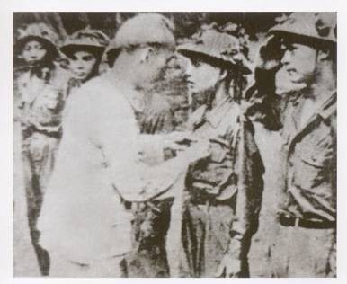
Bác Hồ thưởng Huân chương Chiến công cho các chiến sĩ Điện Biên Phủ (5/1954)Chủ tịch Hồ Chí Minh trực tiếp gắn huân chương, động viên các chiến sĩ lập công trong Chiến dịch Điện Biên Phủ.
2
Cần, kiệm, liêm, chính, chí công vô tư
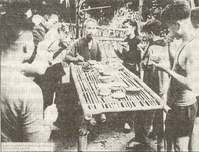
Bữa cơm của Bác và các chiến sĩ ở Tân TràoBác cùng ăn, cùng ở với cán bộ, chiến sĩ trong những ngày kháng chiến chống Pháp.
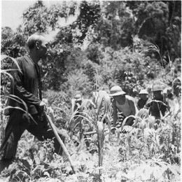
Bác Hồ cùng các chiến sĩ tăng gia sản xuất ở chiến khuTrong kháng chiến, Bác cùng cán bộ, chiến sĩ trồng trọt, tự túc lương thực.Bác Hồ cùng các đồng chí tăng gia sản xuất ở Phủ Chủ tịchDù bận trăm công nghìn việc, Bác vẫn trực tiếp lao động, tăng gia sản xuất.
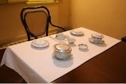
Bữa cơm hằng ngày của Bác Hồ ở Phủ Chủ tịchBữa ăn đạm bạc, giản dị của vị Chủ tịch nước.
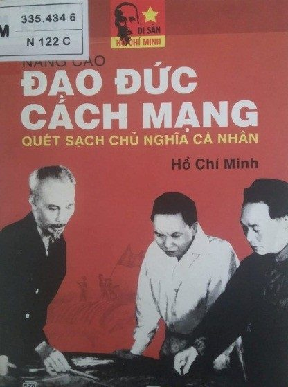
Tác phẩm “Đạo đức cách mạng” (1958)Bài viết của Hồ Chí Minh về đạo đức cách mạng, chỉ rõ yêu cầu quét sạch chủ nghĩa cá nhân (bìa sách xuất bản).
3
Thương yêu con người, sống có tình nghĩa
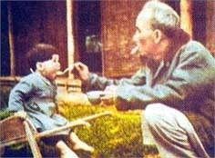
Bác Hồ chăm sóc một cháu béBác ân cần, tự tay chăm sóc cháu nhỏ.
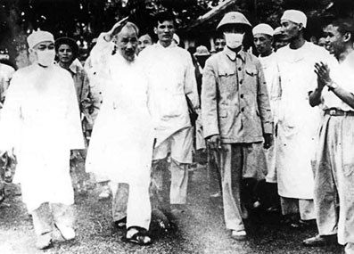
Bác Hồ thăm Viện Quân y 7Bác ân cần thăm hỏi, động viên thương binh, bệnh binh và đội ngũ y, bác sĩ.
4
Tu dưỡng đạo đức suốt đời
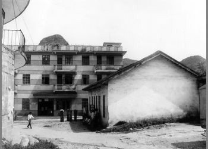
Trụ sở xã Túc Vinh, huyện Đức Bảo, tỉnh Quảng Tây (Trung Quốc)Nơi chính quyền Tưởng Giới Thạch bắt giữ Hồ Chí Minh tháng 8/1942, mở đầu hơn một năm Người bị giải qua nhiều nhà lao.
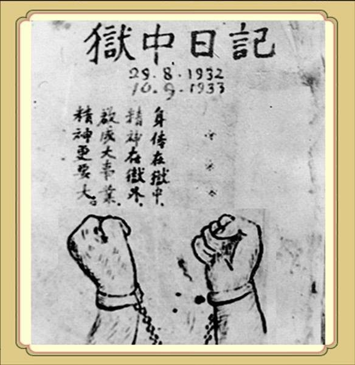
Tập thơ “Nhật ký trong tù”Tập thơ Bác viết trong thời gian bị chính quyền Tưởng Giới Thạch giam giữ (1942 – 1943), thể hiện ý chí, bản lĩnh và sự tu dưỡng của người cách mạng.
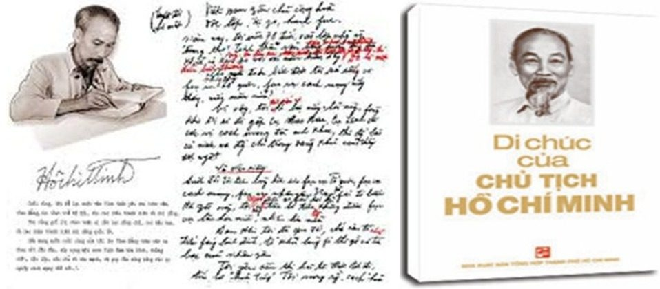
Bản Di chúc của Chủ tịch Hồ Chí MinhTừ năm 1965 đến năm 1969, Người viết và bổ sung Di chúc – văn kiện kết tinh tư tưởng, đạo đức, tình cảm của Người. Bên trái: chân dung và bút tích Di chúc (ảnh ghép); bên phải: sách “Di chúc của Chủ tịch Hồ Chí Minh”.
Phim tư liệu
Phim tư liệu đang được cập nhật
Trích dẫn, tác phẩm của Bác
Trích dẫn · Đạo đức Hồ Chí Minh
Bấm vào trích dẫn hoặc ảnh để phóng to
Mạch trích dẫnTám trích dẫn đi theo mạch
01Vai trò của đạo đức (cái gốc, nền tảng)
02Bốn chuẩn mực (trung với nước, hiếu với dân; cần, kiệm, liêm, chính, chí công vô tư; thương yêu con người)
03Nguyên tắc tu dưỡng đạo đức suốt đời
0110/1947
Đạo đức là cái gốc của người cách mạng
Đạo đức là gốc, là nền tảng của người cách mạng; đức là gốc nhưng đức phải gắn với tài.
“
Cũng như sông thì có nguồn mới có nước, không có nguồn thì sông cạn. Cây phải có gốc, không có gốc thì cây héo. Người cách mạng phải có đạo đức, không có đạo đức thì dù tài giỏi mấy cũng không lãnh đạo được Nhân dân.
0212/1958
Đạo đức cách mạng làm nền tảng
Đạo đức tạo nên sức mạnh, là nhân tố quyết định thành công của sự nghiệp cách mạng.
“
Làm cách mạng để cải tạo xã hội cũ thành xã hội mới là một sự nghiệp rất vẻ vang, nhưng nó cũng là một nhiệm vụ rất nặng nề, một cuộc đấu tranh rất phức tạp, lâu dài và gian khổ. Có sức mạnh mới gánh được nặng và đi được xa. Người cách mạng phải có đạo đức cách mạng làm nền tảng, mới hoàn thành được nhiệm vụ cách mạng vẻ vang.
03
Tận trung với nước, tận hiếu với dân
Chuẩn mực 1 – Trung với nước, hiếu với dân: phẩm chất quan trọng nhất, bao trùm nhất.
“
Người cán bộ cách mạng phải có đạo đức cách mạng. Phải giữ vững đạo đức cách mạng mới là người cách mạng chân chính. Đạo đức cách mạng có thể nói tóm tắt là: Nhận rõ phải trái, giữ vững lập trường; tận trung với nước, tận hiếu với dân.
041949
Bốn đức của người cách mạng
Chuẩn mực 2 – Cần, kiệm, liêm, chính: phẩm chất gắn với hoạt động hằng ngày của mỗi người.
“
Trời có bốn mùa: Xuân, Hạ, Thu, Đông; đất có bốn phương: Đông, Tây, Nam, Bắc; người cách mạng phải có bốn đức: Cần, Kiệm, Liêm, Chính. Thiếu một mùa thì không thành trời, thiếu một phương thì không thành đất, thiếu một đức thì không thành người.
05
Chí công vô tư – lợi ích cá nhân và tập thể
Chí công vô tư: đặt lợi ích chung lên trên, nhưng không phủ nhận lợi ích cá nhân chính đáng.
“
Lợi ích của cá nhân gắn liền với lợi ích tập thể. Nếu lợi ích cá nhân mâu thuẫn với lợi ích tập thể, thì đạo đức cách mạng đòi hỏi lợi ích riêng của cá nhân phải phục tùng lợi ích chung của tập thể.
06
Thương yêu, giúp đỡ lẫn nhau
Chuẩn mực 3 – Thương yêu con người, sống có tình nghĩa: thương yêu, giúp đỡ nhau cùng tiến bộ.
“
Phải thấm nhuần đạo đức cách mạng, tức là khiêm tốn, đoàn kết, thực hành chủ nghĩa tập thể, thương yêu, giúp đỡ lẫn nhau, người tiên tiến thì giúp người kém, người kém phải cố gắng tiến lên, ra sức cần kiệm xây dựng nước nhà.
07
Ai giữ được đạo đức đều là người cao thượng
Giá trị của đạo đức không phụ thuộc vào địa vị, công việc to hay nhỏ; ai cũng có thể rèn luyện để trở thành người cao thượng.
“
Tuy năng lực và công việc của mỗi người khác nhau, người làm việc to, người làm việc nhỏ, nhưng ai giữ được đạo đức đều là người cao thượng.
08
Ngọc càng mài càng sáng
Nguyên tắc tu dưỡng đạo đức suốt đời; đạo đức hình thành qua rèn luyện bền bỉ trong thực tiễn.
“
Đạo đức cách mạng không phải trên trời sa xuống. Nó do đấu tranh, rèn luyện bền bỉ hàng ngày mà phát triển, củng cố. Cũng như ngọc càng mài càng sáng, vàng càng luyện càng trong.